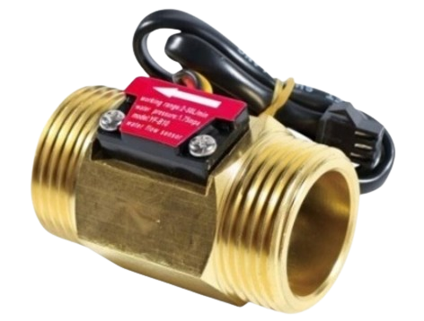

Turbine Flow Sensor

เซนเซอร์วัดอัตราไหลด้วยใบพัดเป็นเซนเซอร์ที่ใช้ใบพัดภายในเมื่อของเหลวไหลผ่านจะทำให้ใบพัดหมุนตามความเร็วการไหล โดยใช้ค่าซึ่งเป็นค่าจำนวนพัลส์ต่อปริมาตรของของเหลวที่กำหนดโดยผู้ผลิตในการคำนวณอัตราไหลดังสมการ
$$Q=\frac{f}{K}$$
Q คือ อัตราการไหล (L/min)
f คือ ความถี่ของ Pulse (Hz)
K คือ K-factor หรือ Pulse-per-liter